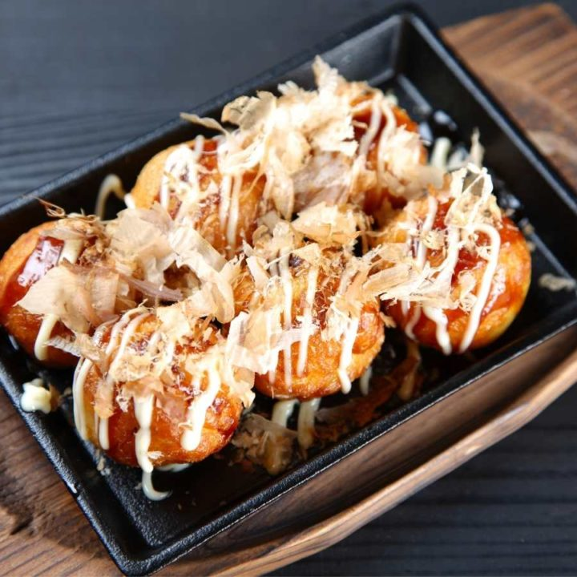

Takoyaki

Description:
Takoyaki is a delicious Japanese street food that originated in Osaka. These savory, bite-sized balls are made with a batter of flour, eggs, and dashi broth, which is filled with tender pieces of octopus, scallions, and pickled ginger. The combination of crispy texture and savory flavors make takoyaki a popular street food in Japan, and it has gained popularity worldwide. It is a perfect appetizer or snack for any occasion, and its unique taste and presentation are sure to impress your guests. Give this recipe a try and experience the delicious flavors of Japan in the comfort of your own home!
Ingredients:
- 1 cup all-purpose flour
- 2 tsp baking powder
- 1/2 tsp salt
- 2 eggs
- 1 cup dashi broth
- 1/4 cup chopped scallions
- 1/4 cup chopped pickled ginger
- 1/2 cup cooked and diced octopus
- Takoyaki sauce
- Japonese mayonnaise
- Bonito flakes
Steps:
- In a mixing bowl, whisk together the flour, baking powder, and salt.
- In a separate bowl, beat the eggs and then mix in the dashi broth.
- Pour the egg mixture into the flour mixture and whisk until well combined.
- Add the scallions, pickled ginger, and diced octopus to the batter and stir to combine.
- Heat a takoyaki pan on medium heat and brush each mold with oil.
- Pour the batter into each mold until it's just below the rim.
- Let the takoyaki cook for 2-3 minutes, or until the edges start to firm up.
- Using a skewer or chopsticks, flip each takoyaki ball over and continue cooking for an additional 2-3 minutes, or until golden brown.
- Remove the takoyaki from the pan and place them on a plate.
- Drizzle takoyaki sauce and Japanese mayonnaise on top of the takoyaki, and sprinkle with bonito flakes.
- Serve hot and enjoy!
Go back to the main menu!